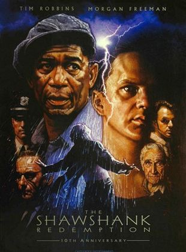

Benzer filmler

|  |
The Shawshank RedemptionChronicles the experiences of a formerly successful banker as a prisoner in the gloomy jailhouse of Shawshank after being found guilty of a crime he did not commit. The film portrays the man's unique way of dealing with his new, torturous life; along the way he befriends a number of fellow prisoners, most notably a wise long-term inmate named Red. Film listesi |
Benzer filmler |
|
Popüler filmler |
|